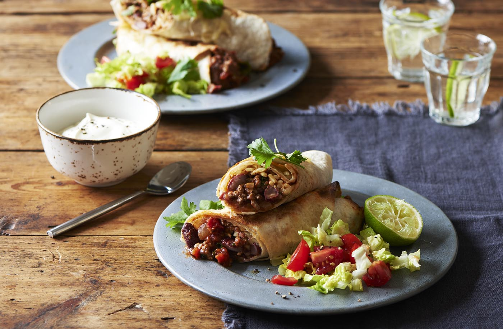

Burrito Recepie

A meaty, spicy beef burrito is the perfect family dinner. Wrapped in tortillas and grilled with melted Cheddar cheese,
these easy-to-prepare burritos have a hearty, beef and bean filling. Serve with a little fresh salad and soured cream.
Ingredients
- 1 tbsp sunflower oil
- 1 medium onion, finely chopped
- 2 garlic cloves, minced
- 500g beef mince
- 1½ tsp ground cumin
- 1½ tsp paprika
- ¼ tsp hot chilli powder
- 2 tsp tomato purée
Method
- Heat the sunflower oil in a large saucepan over a medium-high heat. Sauté the onion and garlic for 5-6 mins, stirring
occasionally, until the onion starts to brown. Add the beef mince and increase the heat. Cook for 3 mins, stirring
continuously to break up meat, until browned all over.
- Stir in the cumin, paprika, chilli powder and tomato purée, and cook for a further 1 min. Add in the chopped tomatoes,
kidney beans and stock, stir and bring to the boil, then reduce to a simmer for 20 mins until thickened, stirring occasionally.
-
Remove from the heat, stir in the chopped coriander and season to taste. Preheat the grill to high. Spoon the beef filling into
the centre of the tortillas. Scatter half the cheese down the filling, then fold the sides of the tortillas in to create the
burritos. Arrange them closely together on a baking tray and top with the remaining grated cheese.
-
Grill for 1-2 mins until the cheese has melted and the filling is hot, then transfer to serving plates. Serve with the lettuce,
tomatoes and a dollop of soured cream, if liked.
Back to main page